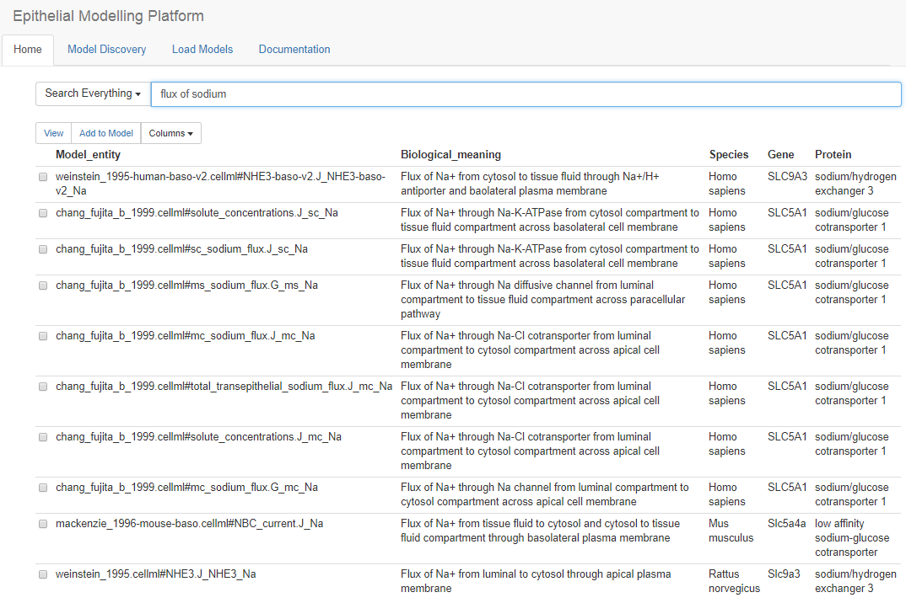

Discover CellML Models¶
User will search models in order to develop a new epithelial model. The screenshot presented below is an example of list of discovered models for a search term “flux of sodium” from the Physiome Model Repository (PMR). From this list, user can investigate various options such as CellML model entity – name of the model, component name, and variable name; biological annotation deposited in PMR for model discovery; protein name; and species and genes used for experiment. User can navigate to the “view” option to explore more information of a specific model. “Add to Model” option is provided to include a list of models to be considered for next round. However, user can rediscover models from there to this “Discover models” page to explore more models.
